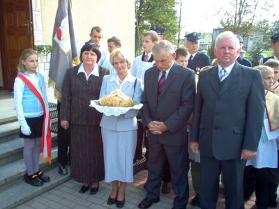

W dniu 26 września 2004r. w Żarówce miała miejsce wielka uroczystość ku czci Matki Bożej Niepokalanej z racji 150-lecia ogłoszenia dogmatu o niepokalanym poczęciu NMP i 100-lecia figury Matki Bożej Niepokalanej w Żarówce. Zgromadziła ona mieszkańców tej miejscowości oraz sąsiednich wiosek, władze gminy pod przewodnictwem pana Burmistrza Józefa Rybińskiego oraz rodzinę fundatorów figury. Nad bezpieczeństwem zebranych czuwały służby porządkowe i medyczne.
Uroczysta Msza św. odbyła się przy ołtarzu polowym pod figurą Matki Bożej. Przewodniczył jej ks. BP Władysław Bobowski, a koncelebrował ks. Proboszcz Eugeniusz Habura oraz zaproszeni księża rodacy, byli wikariusze, którzy pracowali w tej parafii oraz kapłani z dekanatu. Mieszkanka wioski, pani Anna Drąg, odczytała swój utwór poetycki, w którym przedstawiła historię figury. Opowiada ona, że posąg ufundowali: Wacław Puła z Żarówki i Piotr Kulka z Tarnowa w r. 1904, na pamiątkę "50-letniego jubileuszu ogłoszenia dogmatu niepokalanego poczęcia Najświętszej Panny Marii". Zatem historia jej powstania jest specyficzna, ponieważ zazwyczaj fundowano figurę w dowód wdzięczności, np. za uratowanie życia lub odzyskanie zdrowia. Najbardziej niezwykły w tej historii jest fakt, że figurę Matki Bożej postawiono w miejscu, gdzie miał powstać kościół. Świątyni nie udało się wybudować na tej działce, a dopiero 100 lat później, podczas uroczystości rocznicowej ufundowania figury, została tu odprawiona Msza św. Tym samym, choć w części, spełniło się marzenie fundatorów.
Cała uroczystość była solidnie przygotowana przez mieszkańców wioski, którzy pięknie przystroili swój kościółek pod wezwaniem Matki Bożej Królowej Polski, a sama figura tonęła w kwiatach. Nad całością przygotowań duchowych i organizacją święta czuwał ks. proboszcz Eugeniusz Habura oraz Rada Parafialna wioski. Obrzędy uświetnił przejazd ks. Biskupa przez wioskę w bryczce w asyście jeźdźców na koniach. Na uroczystości obecna była kapela wiejska, która grała znane pieśni religijne, a także poczty sztandarowe: ze Szkoły Podstawowej w Żarówce oraz miejscowej Ochotniczej Straży Pożarnej. W przygotowanie święta włączyły się również dzieci szkolne przygotowując Misterium - modlitewne oczekiwanie na przybycie ks. Biskupa.
Jolanta Palion
